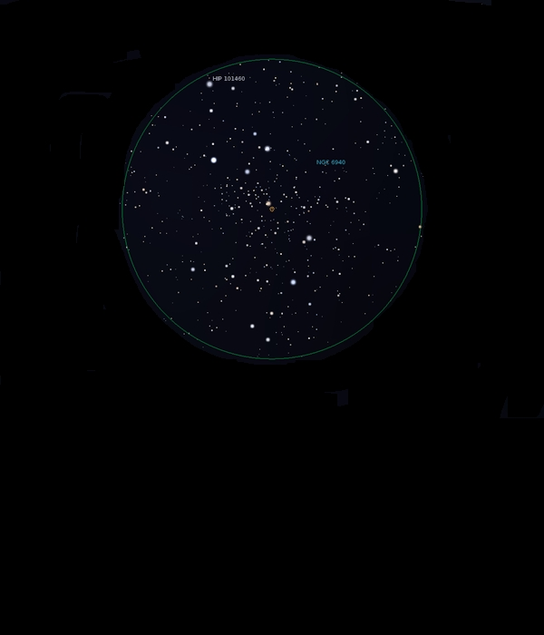

NGC 6940
Open Cluster in Vulpecular
NGC 6940
Mag 6.3
09/09/15
A really lovely Open Cluster which very neatly fits the FOV in
12mm
A 'Christmas Tree' asterism marks the top, comprised of a half
dozen or so stars of Mags 8 and 9 with HIP101460 a little
brighter at Mag 7.7 at the peak
The body of the cluster is a sparkling jewel box of Mags 10
and 11 stars surrounded by a dark lane apart from where the
'Christmas Tree' joins it
All really attractive
10/09/15
This really is a gem of an Open Cluster
The dark lane which surrounds it is really apparent in 12mm,
and in fact is larger than the FOV
The 'Christmas Tree' of brighter stars is a delight!